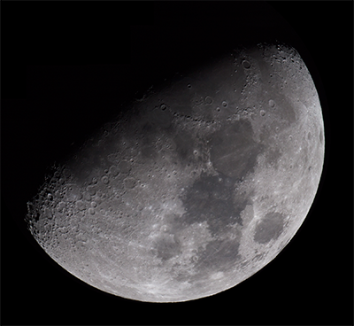
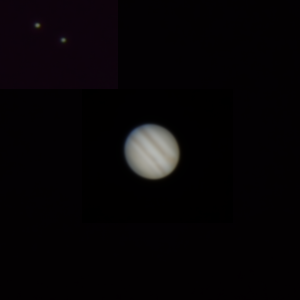
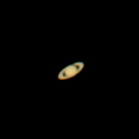
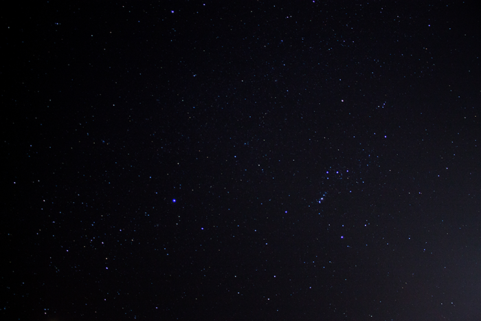

<!doctype html>
<html lang="en">

	<head>
		<meta charset="utf-8">

		<title>reveal.js - The HTML Presentation Framework</title>

		<meta name="description" content="A framework for easily creating beautiful presentations using HTML">
		<meta name="author" content="Hakim El Hattab">

		<meta name="apple-mobile-web-app-capable" content="yes" />
		<meta name="apple-mobile-web-app-status-bar-style" content="black-translucent" />

		<meta name="viewport" content="width=device-width, initial-scale=1.0, maximum-scale=1.0, user-scalable=no">

		<link rel="stylesheet" href="css/reveal.min.css">
		<link rel="stylesheet" href="css/theme/night.css" id="theme">

		<!-- For syntax highlighting -->
		<link rel="stylesheet" href="lib/css/zenburn.css">

		<!-- If the query includes 'print-pdf', include the PDF print sheet -->
		<script>
			if( window.location.search.match( /print-pdf/gi ) ) {
				var link = document.createElement( 'link' );
				link.rel = 'stylesheet';
				link.type = 'text/css';
				link.href = 'css/print/pdf.css';
				document.getElementsByTagName( 'head' )[0].appendChild( link );
			}
		</script>

		<!--[if lt IE 9]>
		<script src="lib/js/html5shiv.js"></script>
		<![endif]-->
	</head>

	<body>

		<div class="reveal">

			<!-- Any section element inside of this container is displayed as a slide -->
			<div class="slides">
				<section data-markdown>
					<script type="text/template">
						## The Basics of Astrophotography

						#### Or: how to take sweet pics of the night sky and impress people on Instagram

						##### Corey Peterson | @clpetersonucf | cpeterson.me
					</script>
				</section>
				<section>
					<section data-markdown>
						<script type="text/template">
							## The Cool Stuff:

							* A greater understanding of the Cosmos and our place within it through firsthand observation
							* Impress the girl or guy you like by looking into spaaaaaace
							* Become the hero of your Facebook feed by posting something other than selfies and baby pictures
						</script>
					</section>
					<section data-markdown>
						<script type="text/template">
							## The Not So Cool Stuff:

							* Weather and cloud cover adds a level of unpredictability
							* Light pollution limits potential more often than not
							* Obtaining better equipment gets very expensive very quickly
						</script>
					</section>
				</section>
				<section>
					<section data-markdown>
						<script type="text/template">
							## Dim and Dimmer

							The brightness of celestial objects generally determines how difficult they are to photograph. Much like ordinary photography, the more light you can capture, the more data you have to work with.
						</script>
					</section>
					<section data-markdown>
						<script type="text/template">
							

							Perhaps unsurprisingly, the Moon is the easiest night sky object to photograph. In many cases, simply holding a smartphone camera to the eyepiece of a telescope will yield decent results.

							*This was taken with a Canon T3 attached to a dobsonian telescope.*
						</script>
					</section>
					<section data-markdown>
						<script type="text/template">
							

							

							Jupiter is generally the brightest object in the night sky after the Moon and Venus, while Saturn is slightly dimmer with a noticeable tan tinge. A low power telescope yields an impressive view of Jupiter's cloud bands and Saturn's rings.
						</script>
					</section>
					<section data-markdown>
						<script type="text/template">
							

							Astrophotography isn't limited to close up shots of distant celestial objects. A professional camera and lens can yield impressive wide field shots when mounted on a tripod.
						</script>
					</section>
					<section data-markdown>
						<script type="text/template">
							## What about nebulae, galaxies, and all that jazz?

							We'll cover that, but more often than not, images of so-called *Deep Sky Objects* (DSO's) are beyond one's budget - and skill - when first starting out.
						</script>
					</section>
				</section>
				<section data-markdown>
					<script type="text/template">
						## WYWSDWYSG:
						#### What You Want to See Determines What You Should Get

						Not all stargazing equipment is suited to every task. The tools you use to image the Moon's surface probably won't work as well for imaging distant galaxies and nebulae.
					</script>
				</section>
				<section>
					<section data-markdown>
						<script type="text/template">
							## Telescopes: A Peculiar Form of Time Travel

							While not required for astrophotography, telescopes have the distinct advantage of being useful with or without a camera attached.

							Before you start snapchatting sweet pics of #saturn #rings #whoa, you should become familiar with navigating the night sky and understanding how a telescope works.

							Two attributes determine the general use of a telescope: the **optics** it employs and the **mount** it rests on.
						</script>
					</section>
					<section data-markdown>
						<script type="text/template">
							All telescope optics work under the same general principle: collect and focus distant light to magnify and enhance a celestial object.

							* *Refractor* telescopes focus light through a series of lenses before they enter the eyepiece.

							* *Reflector* telescopes focus light using curved mirrors.

							* *Catadioptric* telescopes use a combination of specially shaped mirrors and lenses to focus light.

							A number of factors affect the effective "power" of a telescope, but the single most important attribute is *aperture* - the diameter of the primary lens or mirror.
						</script>
					</section>
					<section data-markdown>
						<script type="text/template">
							The telescope mount affects both its ease of use and its effectiveness in viewing various targets, especially over time.

							* An *alt-azimuth* mount is simple and straightforward: the tube can pitch up and down (a change in *altitude*) and rotate to face a different direction on the horizon (a change in *azimuth*).

							* An *equatorial* mount is aligned so that one axis of its rotation matches the rotation of the Earth. It can therefore easily match the *sidereal* motion of stars, or their apparent motion due to the rotation of the Earth.

							Many equatorial mounts are equipped with a motorized drive that matches the rotation of the Earth, allowing it to track stars and objects across the sky.
						</script>
					</section>
				</section>
			</div>

		</div>

		<script src="lib/js/head.min.js"></script>
		<script src="js/reveal.min.js"></script>

		<script>

			// Full list of configuration options available here:
			// https://github.com/hakimel/reveal.js#configuration
			Reveal.initialize({
				controls: true,
				progress: true,
				history: true,
				center: true,

				theme: Reveal.getQueryHash().theme, // available themes are in /css/theme
				transition: Reveal.getQueryHash().transition || 'default', // default/cube/page/concave/zoom/linear/fade/none

				// Parallax scrolling
				// parallaxBackgroundImage: 'https://s3.amazonaws.com/hakim-static/reveal-js/reveal-parallax-1.jpg',
				// parallaxBackgroundSize: '2100px 900px',

				// Optional libraries used to extend on reveal.js
				dependencies: [
					{ src: 'lib/js/classList.js', condition: function() { return !document.body.classList; } },
					{ src: 'plugin/markdown/marked.js', condition: function() { return !!document.querySelector( '[data-markdown]' ); } },
					{ src: 'plugin/markdown/markdown.js', condition: function() { return !!document.querySelector( '[data-markdown]' ); } },
					{ src: 'plugin/highlight/highlight.js', async: true, callback: function() { hljs.initHighlightingOnLoad(); } },
					{ src: 'plugin/zoom-js/zoom.js', async: true, condition: function() { return !!document.body.classList; } },
					{ src: 'plugin/notes/notes.js', async: true, condition: function() { return !!document.body.classList; } }
				]
			});

		</script>

	</body>
</html>
